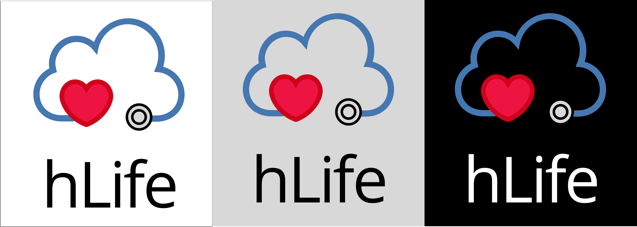

- PORTFOLIO
- ABOUT ME
- RESUME
- CONTACT
HLIFE
There is no exclusive platform where people can store all of their medical records or directly share/accept medical records from their doctors. hLife is a simple, easy to use iOS mobile app, where people can store their medical records.
DELIVERABLE
- User Research
- Competitive Analysis
- User Personas
- User Stories
- User Flows
- Wireframes
- User Testing
- Branding Work
- Prototypes
- User Testing
TOOLS & SOFTWARES
- Sketch
- Figma
- Invision
- Draw.io
- Usability Hub
- Google Forms
THE CHALLENGE
Lab reports, medical prescriptions and history are stored at different doctor’s portal, hard copies or buried in our email somewhere. We have to call our previous doctor to get copies of our medical reports emailed to us. This makes it really hard especially when we change our doctors or move to a new location.
THE SOLUTION
hLife. A cloud storage platform exclusively to store medical records and track history.
hLife makes it really easy for you to store medical records and accept records from your doctor.
COMPETITIVE ANALYSIS
WHERE ARE OUR OPPORTUNITIES?
Upon exploring the market I thought that there was a problem in the medical/health area. To analyze further I started off by performing a competitive analysis among the key cloud storage market players. I did a SWOT analysis between Google Drive, Box Inc. and Athena Health.

GOOGLE DRIVE

BOX INC.
ATHENA HEALTH
VIEW COMPETITIVE ANALYSIS >>
USER SURVERY
TESTING HLIFE
I conducted a user survey to gather insights on what problems users are facing in current cloud storage platforms. I also wanted to understand what users think about using a medical cloud storage platform to store their medical records and also how they currently stored/shared their medical records with their doctors. I sent the survey out to discovery forums and friends.
MARKET CONFIRMATION
From the survey results we were able to confirm that people use antiquated methods to store their medical records such as emails and hard copies. People are looking for a secure platform to store their medical records.

HARD COPIES & EMAILS
80%
of the respondents
"store their medical records in emails or as hard copies"
STORE RECORDS
65%
of the respondents
"feel it is important for them to store their medical records"

ONE PLATFORM
80%
of the respondents
"feel it is important to store their records in one platform"

MULTIPLE ACCOUNTS
47%
of the respondents
"have multiple accounts in different doctors platform to maintain their records"
SHARE RECORDS
77%
of the respondents
"want a platform that enables them to be able to share their medical records"
USER STORIES
Based on the user research, I listed out all possible actions that make the MVP a truly user-friendly, time-saving, intuitive, and functional mobile app, I was able to prioritize and eliminate user stories.
USER FLOWS
created user flows mapping out all the high-priority user stories and where possible medium-priority user stories making an MVP (minimum viable product).
SEE FULL DIAGRAM HERE >>
BRANDING LOGO
I wanted the logo to signify three main things 1. to display the feeling of care and protect 2. to show that this is a cloud storage product 3. this platform is for storing and creating medical profile. Thus, I came up with concepts like cloud, heart and stethoscope in the logo.

Logo Iterations
COLOR PALETTE
I wanted the App to showcase a bright, positive and protective feeling. So, we choose colors like pink, blue and yellow.

Color Palette
TYPOGRAPHY
I wanted the font to be easy on the eyes and easy to read. Since our platform targets a wide range of users with varying abilities and device specifications, I made sure it’s important to use simple, easily readable fonts.

Font List
ICONGRAPHY
When appropriate, icons can be use in place of text, which saves up a lot of space. The styling of these icons goes with HLIFE’s friendly brand personality.

Icon Set
LET’S WORK TOGETHER!
PLEASE FEEL FREE TO CONTACT ME ANYTIME